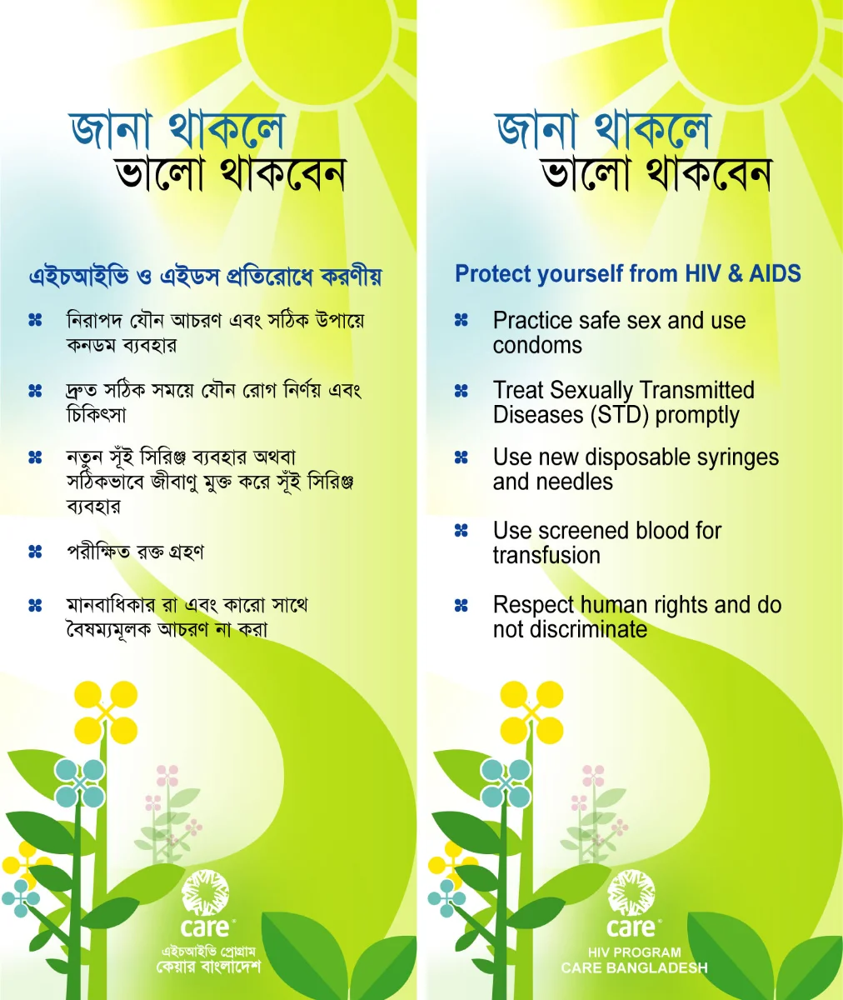
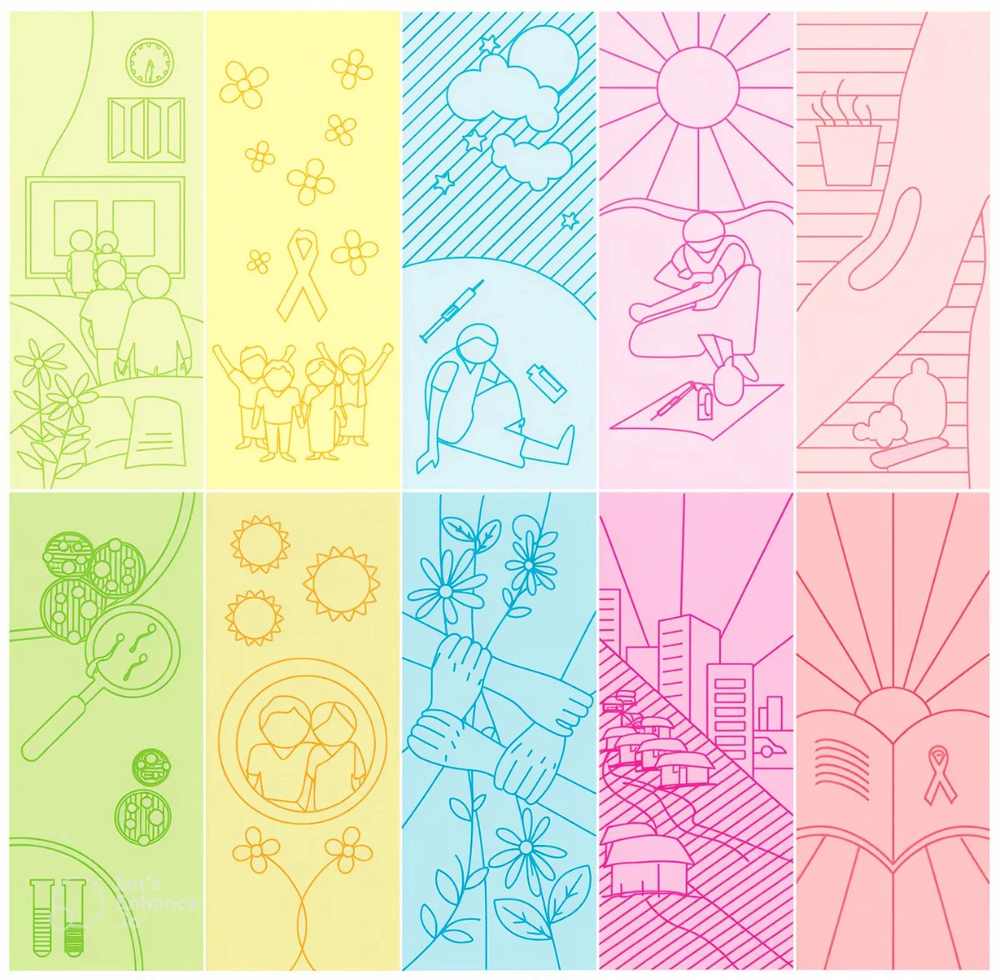

This one goes back further than almost anything else on this page. I started contributing to CARE Bangladesh as a student, as a volunteer, long before I had any real professional design experience. It began small: handwritten titles for internal team meetings, the kind of quiet, unglamorous visual work nobody notices unless it's missing. But it was enough to earn trust, and slowly that trust turned into bigger responsibilities.
Eventually I was designing external communication materials, posters, leaflets, the visible face of programs meant to reach real people outside the organization.

One of the festoon designs from that period, part of the outward-facing work that grew out of those early handwritten titles.
Most of my contribution centered on CARE's HIV Program, where I designed communication tools meant to educate and inform. Being trusted with something this serious, this consequential, felt like an enormous responsibility at the time. It shaped how seriously I've taken design ever since.
The most significant piece of work to come out of this period was a training manual for peer educators, published in both Bangla and English. I was 23 or 24, and it was my first major project handling both the visual system and the layout for a full field publication.
This wasn't a brochure or a campaign. It was a working tool that outreach workers and peer educators, many of them current or former drug users with limited formal education, would use to train each other on HIV prevention, safe injecting, and sexual health. The brief carried a real tension: the content had to be clinically honest about genuinely difficult subject matter (drug addiction, abscesses, STIs, condom demonstration), without ever feeling cold or judgmental to the people reading it. Getting that tone right, accurate but warm, direct but never alarming, was the real design problem, far more than any single layout decision.
The first English draft, page by page, exactly as it was sent for review. Most likely the only version of the design I still have.
A color system built for live use. Each of the ten training sessions needed its own identity, since facilitators would be flipping through this mid-session, often under time pressure. I built a ten-color palette that cycled through every session and carried through every element tied to it, the section divider, the icon panel, the "Notes" pages, even the annexure headers. A facilitator could tell which session they were in without reading a single word. Looking back, this is still the strongest structural decision I made on the project.

Ten session colors, carried through every element tied to each session.
An icon language, not illustration. For the section openers, I chose a thin, dotted-line style rather than anything photographic or heavily rendered, a person curled on a mat, hands joined in a circle, a syringe drawn small and matter-of-fact. I didn't have the vocabulary at 23 to explain it this way, but I was instinctively avoiding two failure modes: sanitizing the subject into abstraction, or illustrating it like a warning poster aimed at the reader rather than a tool built for them. Line art let me show real, sometimes hard content without tipping into either extreme.
Designing the session, not just the page. I didn't just lay out content, I designed the session structure into the page itself. Each step got its own colored time-block (Step 1, 5 minutes; Step 2, 10 minutes), so a first-time facilitator with no additional training could run a session straight from the book. That was as much an instructional-design decision as a graphic one.
Looking at this now, two decades later, I'm struck by how much of it came from instinct rather than training. Concepts like typographic hierarchy or information density weren't part of my thinking yet, I was working by feel, by what seemed right for the people who'd actually use this book. The color system, the icon language, the session structure built directly into the layout, that instinct to build something warm and human around genuinely hard subject matter still feels exactly right to me today, and I'd trust it again without hesitation.
I lost most of the original project files years ago along with an old hard drive. What survives is a draft PDF and a handful of JPGs I'd emailed to the project director at the time, and, tucked into that same inbox thread, her response after seeing the design for the first time:
"I am so so pleased to see this version of the manual, what fine work, true work of art, I can't help but keep smiling. A lot of hard work must have gone into the design and layout which is very bright, lively and colorful, something people would be happy to use and read."
That note has survived everything else from this project. It's one of the earliest pieces of proof I have that design done carefully, even by someone very young and very early in their career, can genuinely move people.